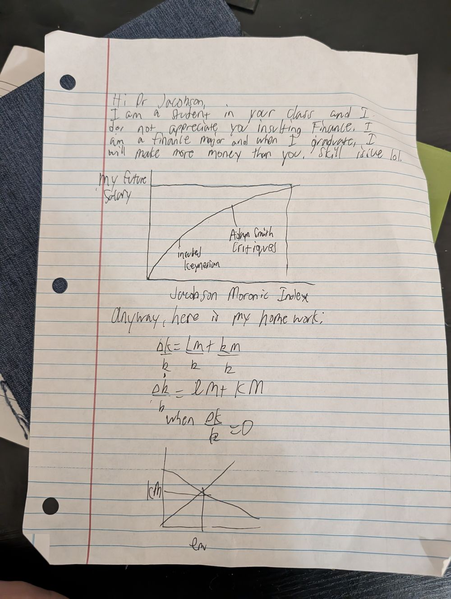

Scholarly Articles / No. 001
Article No. 001 · Peer Review Division
Referee Report on a Manuscript Entitled “skill issue lol”
Referee Report — Journal of Jacobson Studies
Revise & Resubmit — See Me1. Summary of the Submission
The manuscript under review comprises three components: (i) an ad hominem preamble asserting that the author, a finance major, will upon graduation out-earn this referee; (ii) a novel two-variable instrument the author designates the “Jacobson Moronic Index”; and (iii) a document the author alleges to be homework. I address each in ascending order of mathematical content, which is to say, barely.
“skill issue” — noted. Diagnosis confirmed; attribution reversed. —PJ2. The Exhibit
The submission is reproduced below in its entirety, unretouched, as a service to future historians of the discipline.

3. Major Concerns
- The salary projection. The author plots “My Future Salary” as strictly increasing in the “Jacobson Moronic Index.” Neither axis carries units, data, or shame. The plotted curve — annotated “inverted Keynesian,” a phrase I encourage the author never to say near an economist again — is concave, implying diminishing returns to insulting me. On this single point, the author and the literature agree.
- The compensation hypothesis. The author's projected earnings exceed mine only in a model where compensation is proportional to confidence. I have consulted the general equilibrium literature and can confirm such a market clears exclusively at the intersection of LinkedIn and delusion.
- The mathematics. The author writes Δk/k = Lm/k + km/k and then declares a steady state “when Δk/k = 0,” as though equilibrium were a mood. In the Solow framework the steady state emerges when investment equals break-even investment, sy = (n + δ)k — it is arrived at by capital accumulation dynamics, not announced by the student when the algebra becomes inconvenient. Partial credit is awarded for the correct spelling of “when.”
- The concluding diagram. The manuscript closes with a freehand cross of two lines labeled “kM” and “LM.” If this is an IS-LM diagram, the IS curve has been replaced by an aggregate of the author's own invention; if it is supply and demand, both are mislabeled. Either way the author has, remarkably, produced a figure less informative than no figure.
4. Minor Concerns
- The author shares a surname with Adam Smith and a given name with nearly spelling it. The resemblance ends there.
- The manuscript is three-hole punched but was submitted attached to nothing, a fitting metaphor for its argument.
- I have not, for the record, “insulted Finance.” I merely observed, in lecture, that finance is what economics does on its phone. I stand by the observation; it is now cited scholarship.
5. Verdict
The grade of F− is recorded above (rounded up from G, as a kindness). The author is invited to office hours — Tuesdays, 2:00–2:15 PM — where the Solow model will be explained using small words and, if necessary, hand puppets. The author's prediction of future riches is not graded here; the market will referee that manuscript in due course.
Resubmission accepted on lined paper only. You have clearly invested in it. —PJ